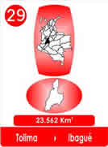
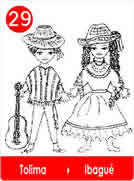
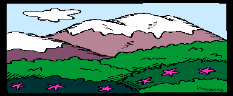

Teodoro había nacido en la chamba de familia muy pobre, pero era un lugar mágico, donde la tierra se convertía como en plastilina para moldear bellas ollas y hermosas vajillas, que cuando se hornean se ven con chispitas doradas que llaman Oropel.

Teo, como le decían, tuvo una hermanita, a la que llamaron Xiny, bella como todas las niñas, pero nació muy débil y él se convirtió en su sombra y en su mejor cuidandero.
Mientras los padres y abuelos fabricaban ollas y figuras, Teo con Xiny eran pastores de burros y burritas.
Allá todos deben tener una, porque utilizan el estiércol que cuando se seca y lo desmenuzan lo mezclan con la arcilla y transforma el color.

Entonces el oficio de los niños era llevarlas a buenos pastos y recoger ese estiércol seco tan original.
A la burrita de ellos le pusieron el nombre del remedio que necesitaba Xiny, "Teofilina", sólo que a veces no alcanzaba el dinero para comprarlo.
Pero a Teo y a Xiny lo que más les gustaban era oír los pajaritos y el turpial.
Teo sabía hacer flautas, tocaba la dulzaina, y hacía pitos para imitarlos, mientras la voz dulce de Xiny acompañaba y cantaba las canciones de Teo.
Hasta que un día Teo se propuso que con la arcilla de las ollas, se podían hacer figuras para soplarlas y así dar el tono del turpial, como lo quería Xiny.
En secreto hizo una figurita como una tortuga sin patas, le hizo cinco huequitos y sopló suavemente.
Se pudo feliz, le pareció que sonaba como el bello turpial, Xiny estaba muy malita, pero Teo le tenía ese regalo y ella al oír el bello sonido la llamó
"Ocarina ".
Entonces Teo compuso unas bellas melodías para que Xiny pudiera dormir, y con la Ocarina se arrullaba bien, y podía dormir mejor.
Pronto los amiguitos le encargaron otras Ocarinas y Teo pudo comprar el remedio para su hermanita, pero no alcanzó el esfuerzo para curarla y Xiny se fué para el Cielo.
Y cada día Teo soplaba su Ocarina para que su linda hermanita, oyera su música y cantara con todos los Ángeles.